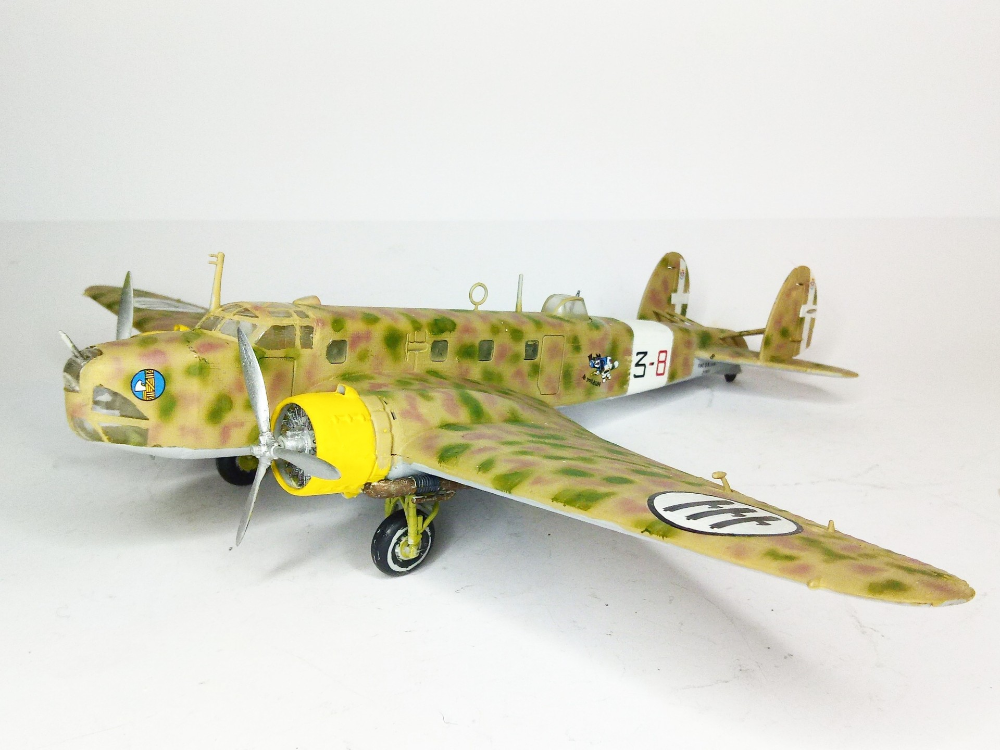
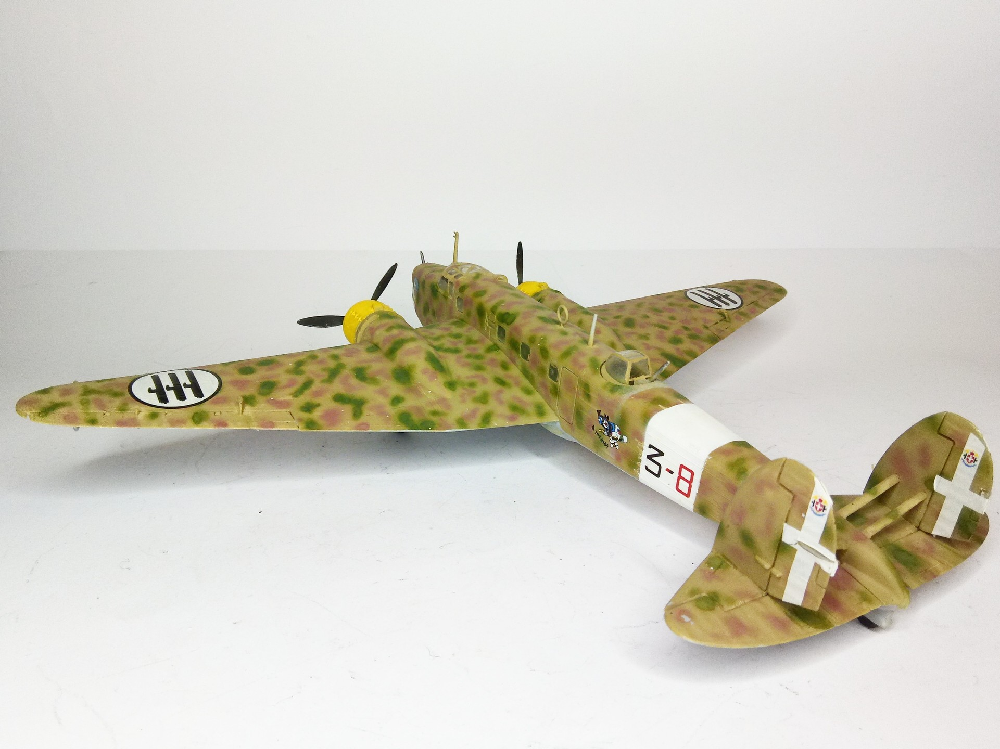

Aerei · scale model archive
FIAT BR20/M Cicogna
FIAT BR20/M Cicogna — Kit: Italeri, Scale: 1/72. Regia Aeronautica CAI Belgium 1941 #1/72 #Italeri #scalemodels #plasticmodels #WWII #FIAT #BR20

Photo gallery

English description
Regia Aeronautica CAI Belgium 1941
#1/72 #Italeri #scalemodels #plasticmodels #WWII #FIAT #BR20
Descrizione italiana
Regia Aeronautica, CAI, Belgio, 1941.